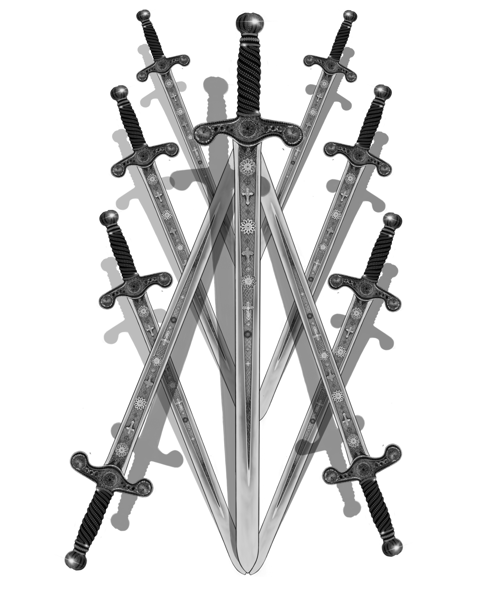
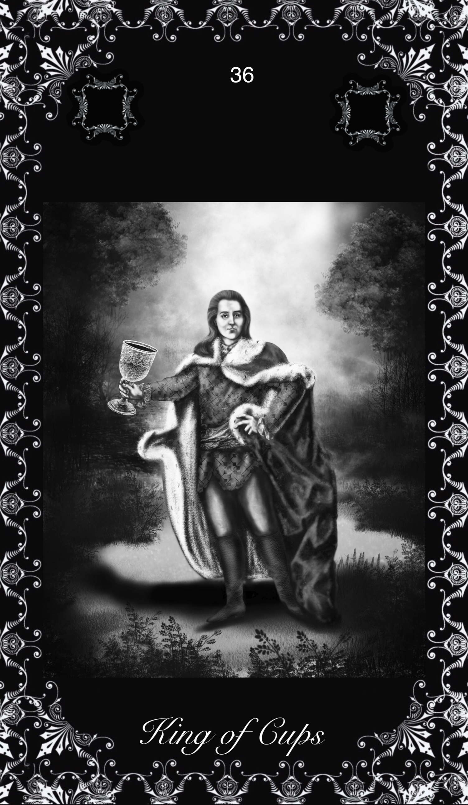
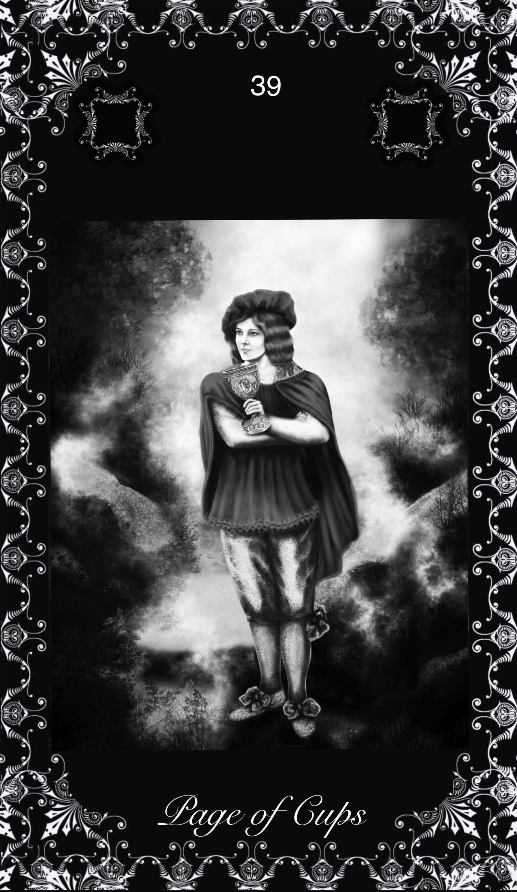
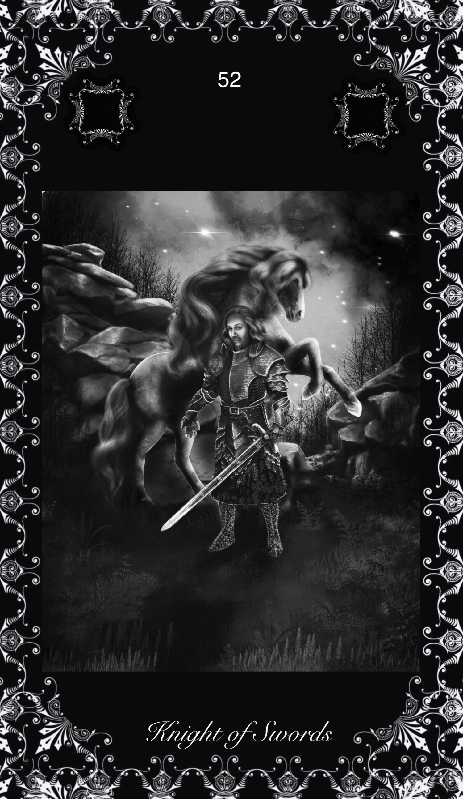

Distinction between the Greater and Lesser Arcana
IN respect of their usual presentation, the bridge between the Greater and Lesser Arcana is supplied by the court cards--King, Queen, Knight and Squire or Page; but their utter distinction from the Trumps Major is shewn by their conventional character. Let the reader compare them with symbols like the Fool, the High Priestess, the Hierophant, or--almost without exception--with any in the previous sequence, and he will discern my meaning. There is no especial idea connected on the surface with the ordinary court cards; they are a bridge of conventions, which form a transition to the simple pretexts of the counters and denaries of the numbers following. We seem to have passed away utterly from the region of higher meanings illustrated by living pictures. There in was a period, however, when the numbered cards were also pictures, but such devices were sporadic inventions of particular artists and were either conventional designs of the typical or allegorical kind, distinct from what is understood by symbolism, or they were illustrations--shall we say?--of manners, customs and periods. They were, in a word, adornments, and as such they did nothing to raise the significance of the Lesser Arcana to the plane of the Trumps Major; moreover, such variations are exceedingly few. This notwithstanding, there are vague rumours concerning a higher meaning in the minor cards, but nothing has so far transpired, even within the sphere of prudence which belongs to the most occult circles; these, it is true, have certain variants in respect of divinatory values, but I have not heard that in practice they offer better results. Efforts like those of Papus in The Tarot ol the Bohemians are strenuous and deserving after their own kind; be, in particular, recognizes the elements of the Divine Immanence in the Trumps Major, and he seeks to follow them through the long series of the lesser cards, as if these represented filtrations of the World of Grace through the World of Fortune; but he only produces -an arbitrary scheme of division which he can carry no further, and he has recourse, of necessity, in the end to a common scheme of divination as the substitute for a title to existence on the part of the Lesser Arcana. Now, I am practically in the same position; but I shall make no attempt here to save the situation by drawing on the mystical properties of numbers, as he and others have attempted, I shall recognize at once that the Trumps Major belong to the divine dealings of philosophy, but all that follows to fortune-telling, since it has never yet been translated into another language; the course thus adopted will render to divination, and at need even to gambling, the things that belong to this particular world of skill, and it will set apart for their proper business those matters that are of another order. In this free introduction to the subject in hand, it is only necessary to add that the difference between the fifty-six Lesser Arcana and ordinary playing-cards is not only essentially slight, because the substitution of Cups for Hearts, and so forth, constitutes an accidental variation, but because the presence of a Knight in each of the four suits was characteristic at one time of many ordinary packs, when this personage usually replaced the Queen. In the rectified Tarot which illustrates the present handbook, all numbered cards of the Lesser Arcana--the Aces only excepted--are furnished with figures or pictures to illustrate-but without exhausting--the divinatory meanings attached thereto.
Some who are gifted with reflective and discerning faculties in more than the ordinary sense--I am not speaking of clairvoyance may observe that in many of the Lesser Arcana there are vague intimations conveyed by the designs which seem to exceed the stated divinatory values. It is desirable to avoid misconception by specifying definitely that, except in rare instances--and then only by accident--the variations are not to be regarded as suggestions of higher and extradivinatory symbolism. I have said that these Lesser Arcana have not been translated into a language which transcends that of fortune telling. I should not indeed be disposed to regard them as belonging in their existing forms to another realm than this; but the field of divinatory possibilities is inexhaustible, by the hypothesis of the art, and the combined systems of cartomancy have indicated only the bare heads of significance attaching to the emblems in use. When the pictures in the present case go beyond the conventional meanings they should be taken as hints of possible developments along the same lines; and this is one of the reasons why the pictorial devices here attached to the four denaries will prove a great help to intuition. The mere numerical powers and bare words of the meanings are insufficient by themselves; but the pictures are like doors which open into unexpected chambers, or like a turn in the open road with a wide prospect beyond.
MINOR ARCANAS
The resources of interpretation have been lavished, if not exhausted, on the twenty-two Trumps Major, the symbolism of which is unquestionable. There remain the four suits, being Wands or Sceptres--ex hypothesi, in the archæology of the subject, the antecedents of Diamonds in modern cards: Cups, corresponding to Hearts; Swords, which answer to Clubs, as the weapon of chivalry is in relation to the peasant's quarter-staff or the Alsatian bludgeon; and, finally, Pentacles--called also Deniers and Money--which are the prototypes of Spades, In the old as in the new suits, there are ten numbered cards, but in the Tarot there are four Court Cards allocated to each suit, or a Knight in addition to King, Queen and Knave. The Knave is a page, valet, or damoiseau; most correctly, he is an esquire, presumably in the service of the Knight; but there are certain rare sets in which the page becomes a maid of honour, thus pairing the sexes in the tetrad of the court cards. There are naturally distinctive features in respect of the several pictures, by which I mean that the King of Wands is not exactly the same personage as the King of Cups, even after allowance has been made for the different emblems that they bear; but the symbolism resides in their rank and in the suit to which they belong. So also the smaller cards, which--until now--have never been issued pictorially in these our modem days, depend on the particular meaning attaching to their numbers in connexion with the particular suit. I reserve, therefore, the details of the Lesser Arcana, till I come to speak in the second part of the rectified and perfected Tarot which accompanies this work. The consensus of divinatory meanings attached both to the greater and lesser symbols belongs to the third part.

MEANINGS OF THE MINOR ARCANS CARDS - CUPS
The physical and emotional nature to which this card is attributed is dark, ardent, lithe, animated, impassioned, noble. The King uplifts a flowering wand, and wears, like his three correspondences in the remaining suits, what is called a cap of maintenance beneath his crown. He connects with the symbol of the lion, which is emblazoned on the back of his throne. Divinatory Meanings: Dark man, friendly, countryman, generally married, honest and conscientious. The card always signifies honesty, and may mean news concerning an unexpected heritage to fall in before very long. Reversed: Good, but severe; austere, yet tolerant.
THEORY: The King of the suit of Earth, coming on the house of Aries, First house or ascendant. Whatsoever we may say of the 'reversed' side or weaker cases of this card, a king is a king and always denotes a higher accord, some one or something of principal value and rank. The king of the Martian and Saturnian element naturally is the king of matter and of war, i.e. also he who wins war and conducts the battle of earthy interests. It denotes the dominion and rulership of this element, consequently the military chief. This by the way we are astonished not to find mentioned by tradition, which mentions the man of the law, lawyer, advocate or judge, who rules or guides worldly strife and contention. As the ruler of the ascendant, the card may certainly mean any person heading a cycle of material activity and before all a pioneer on this plane, an independent man living on his own means. While material integrity is implicit, duplicity, doubt, double-dealing or uncertainty are definitely excluded. It indicates material certainty and severity, whether benefic or malific from a personal point of view, healthy or rude, even cruel. But we fail to see what it has to do with perversity, unless the meaning be the overruling of everything else, the higher by the material power, and the misuse of the latter. The card means an emphatic Yes.
CONCLUSION: General, captain, military chief, worldly authority, chief or captain in any branch of activity, man of the law; power, command, decision, initiative, pioneering, valour, integrity, severity, material certainty; in weak cases cruelty, misuse of power, tyranny.
Beautiful, fair, dreamy--as one who sees visions in a cup. This is, however, only one of her aspects; she sees, but she also acts, and her activity feeds her dream. Divinatory Meanings: Good, fair woman; honest, devoted woman, who will do service to the Querent; loving intelligence, and hence the gift of vision; success, happiness, pleasure; also wisdom, virtue; a perfect spouse and a good mother. Reversed: The accounts vary; good woman; otherwise, distinguished woman but one not to be trusted; perverse woman; vice, dishonour, depravity.
THEORY: The female rulership of the element of Earth on the house of Taurus, in which the Moon is exalted and 'womanhood eternal' is contained. The house of money, in worldly affairs. So this card must mean either woman ruling by matter, material or magnetic attraction, purely physical charm, or ruled by material elements herself. The latter may be seen as: ruled by the desire of luxury and money, or as: overpowered by material difficulties, weighed down under the burden of a material world. A woman of Saturnian and Martian qualities is seldom charming unless in a purely physical and sexual way; there may be higher virtues, however, which in this case will be developed by suffering, such as chastity, severity, continence--from which it will be easily seen, that sterility, privation and mourning may derive, personally. Astrologically the Martian and Saturnian qualities are seldom found to be very 'benefic' for women, being very often signs of an unpleasant character or injured reputation. On the one hand this card may be a woman under affliction and severed from her natural protector or protection--widow, divorced, separated, though not the unmarried; on the other hand we have to see in this card the woman who is paid for her 'love,' and the fact that "woman costs money," a fact of more occult significance than the world at large understands. It is indicated in the commandment of JHVH that 'man' should till the soil (Taurus) after the loss of the paradisical state. So this card has to do with the material necessity of married life, with peasantry and husbandry and economical exploitation. Well aspected, it may indicate art in general and sometimes wealth after assiduous struggle and toil.
CONCLUSION: Suffering, afflicted woman, widow, divorced or separated; or woman of a lower sort of character, hateful, spiteful, paid love, deception in love; material stress, heavy expenses, burdening; also exploitation, peasantry, possibility of wealth after enduring toil. In many cases it means sterility, privation. Only strong characters can stand this card. To weak characters it is full of menace and may cause grief, mourning, failure in the face of the hardship of life and unemployment. It may mean the absence of woman where she is wished for or desired. It warns against the evil influence of (a) woman.
A lithe, active figure holds a sword upright in both hands, while in the act of swift walking. He is passing over rugged land, and about his way the clouds are collocated wildly. He is alert and lithe, looking this way and that, as if an expected enemy might appear at any moment. Divinatory Meanings: Authority, overseeing, secret service, vigilance, spying, examination, and the qualities thereto belonging. Reversed: More evil side of these qualities; what is unforeseen, unprepared state; sickness is also intimated.
TRADITION: Overseer, artist, learned man, spy, indiscreet person, who will eventually "pry into the querent's secrets." Secret service, vigilance, examination, calculation, speculation. A note, observation, remark. Reversed: "The more evil side of those qualities" (W.); the unforeseen sudden, surprising; improvisation. Acting or speaking without due preparation.
THEORY: The Martian and Saturnian element on the Third house and on the Eleventh. It is very remarkable, that the first series of meanings in this case hint at the third house, while the so-called reversed meanings bear all the characteristics of the Uranian eleventh house: suddenness, surprise, etc. This element on the house of Air, Gemini and Aquarius, must, of course, denote either intellectual facts or concrete results of intelligence. The latter may be called 'proof' or 'outcome' or exact knowledge. The knowledge of facts may be the fruit of an elementary school curriculum, of journalism, of spying, etc. But it is justly indicated by tradition, that the Martian and Saturnian Gemini-man is a specialist in unlawful knowledge or in knowledge gathered at the cost of much trouble and effort; so it may be also knowledge gathered later in life, university extension. Exact intellectual results may appear as: remarks, observations, notes, etc. When put in the negative there may be investigation, examination, etc. All these are truly the effects of Gemini. There are, moreover, the personalities representing the facts. On account of the eleventh house we shall have to note the same sort of results but more or less reciprocal and sudden, whereas Uranus, lord of this house, accelerates the energy of Mars in this element but is apt to destroy the Saturnian vibrations or at least counteract them. It is quite true, therefore, that this card may represent speaking and acting without sufficient preparation and without dogmatic or very formal outlines: improvisation. Tradition was very correct in this. It could not know, that this page, on account of its eleventh house relations, will represent the railway-, tramway- or bus-conductor as well as the constable regulating the traffic, also the warnings of the same.
CONCLUSION: Results of exact studies, knowledge, note, observation, warning, indication, examination, inspection, investigation; inspector, constable, police-officer, and their orders; spy, detective, examiner. Dilettante, one who will surprise by his daring but is not well prepared in speech or acting., The latter in weak cases. Sudden, rather unexpected, surprising events or effects.
Graceful, but not warlike; riding quietly, wearing a winged helmet, referring to those higher graces of the imagination which sometimes characterize this card. He too is a dreamer, but the images of the side of sense haunt him in his vision. Divinatory Meanings: Arrival, approach--sometimes that of a messenger; advances, proposition, demeanour, invitation, incitement. Reversed: Trickery, artifice, subtlety, swindling, duplicity, fraud.
THEORY: Finally this element on the Fourth and on the Twelfth houses. On account of the former we find of course the armed man under the rule of the Emperor, the military man, soldier, etc., but rather the professional, formerly the hired, troops than the militia, which will rather fall under the same house as the police, and be indicated by the page of swords. Another significance of this card is that of painful memories, suffering by ancient wrongs. In fact war is in all cases, be it private or collective, the phenomenon of the outbreak of some ancient wrong or evil--the wrong of oppression on one side or the evil of desire, rapacity, overflowing force, etc., on the other. So the Knight of swords must bear the significance of the bearer of weapons, which avenge wrongs or serve attacks. The fourth house calls the home and the family, the father in particular, and the
card may well denote something in the nature of avenging family feuds or the honour of the father or the family. Badly aspected it may mean opposition against the power of the father or the Emperor, revolution, which is quite in the line of the grumbling and malcontent nature of the Cancerian of the lower type. It is, however, to be expected that such opposition will be very much hidden, dark, in the background, not open nor very loyal. On account of its relation with the twelfth house this card may also mean a surgeon and operations performed by him, and, in lower types or weaker cases, fraud and destruction of organisms, whatever these may be. It may further relate here to all sorts of bad passions and to degrees of hatred, incapacity, etc.
CONCLUSION: Military man, man of arms, one avenging family or other feuds or wrongs; wrongs avenging themselves; painful memories, distress in the family, afflictions deriving from past events. A surgeon, operation done by same; the knife in old sore. In badly aspected cases hatred, destruction, extravagance, spilling, revolt, insurrection, war, combat, fraud, impertinence, imprudence, etc.

KING of CUPS

QUEEN of CUPS

KNIGHT of CUPS

PAGE of CUPS
MEANINGS OF THE MINOR ARCANS CARDS - PENTACLES
The figure calls for no special description the face is rather dark, suggesting also courage, but somewhat lethargic in tendency. The bull's head should be noted as a recurrent symbol on the throne. The sign of this suit is represented throughout as engraved or blazoned with the pentagram, typifying the correspondence of the four elements in human nature and that by which they may be governed. In many old Tarot packs this suit stood for current coin, money, deniers. I have not invented the substitution of pentacles and I have no special cause to sustain in respect of the alternative. But the consensus of divinatory meanings is on the side of some change, because the cards do not happen to deal especially with questions of money. Divinatory Meanings: Valour, realizing intelligence, business and normal intellectual aptitude, sometimes mathematical gifts and attainments of this kind; success in these paths. Reversed: Vice, weakness, ugliness, perversity, corruption, peril.
THEORY: The King of the suit of Earth, coming on the house of Aries, First house or ascendant. Whatsoever we may say of the 'reversed' side or weaker cases of this card, a king is a king and always denotes a higher accord, some one or something of principal value and rank. The king of the Martian and Saturnian element naturally is the king of matter and of war, i.e. also he who wins war and conducts the battle of earthy interests. It denotes the dominion and rulership of this element, consequently the military chief. This by the way we are astonished not to find mentioned by tradition, which mentions the man of the law, lawyer, advocate or judge, who rules or guides worldly strife and contention. As the ruler of the ascendant, the card may certainly mean any person heading a cycle of material activity and before all a pioneer on this plane, an independent man living on his own means. While material integrity is implicit, duplicity, doubt, double-dealing or uncertainty are definitely excluded. It indicates material certainty and severity, whether benefic or malific from a personal point of view, healthy or rude, even cruel. But we fail to see what it has to do with perversity, unless the meaning be the overruling of everything else, the higher by the material power, and the misuse of the latter. The card means an emphatic Yes.
CONCLUSION: General, captain, military chief, worldly authority, chief or captain in any branch of activity, man of the law; power, command, decision, initiative, pioneering, valour, integrity, severity, material certainty; in weak cases cruelty, misuse of power, tyranny.
The face suggests that of a dark woman, whose qualities might be summed up in the idea of greatness of soul; she has also the serious cast of intelligence; she contemplates her symbol and may see worlds therein. Divinatory Meanings: Opulence, generosity, magnificence, security, liberty. Reversed: Evil, suspicion, suspense, fear, mistrust.
THEORY: The female rulership of the element of Earth on the house of Taurus, in which the Moon is exalted and 'womanhood eternal' is contained. The house of money, in worldly affairs. So this card must mean either woman ruling by matter, material or magnetic attraction, purely physical charm, or ruled by material elements herself. The latter may be seen as: ruled by the desire of luxury and money, or as: overpowered by material difficulties, weighed down under the burden of a material world. A woman of Saturnian and Martian qualities is seldom charming unless in a purely physical and sexual way; there may be higher virtues, however, which in this case will be developed by suffering, such as chastity, severity, continence--from which it will be easily seen, that sterility, privation and mourning may derive, personally. Astrologically the Martian and Saturnian qualities are seldom found to be very 'benefic' for women, being very often signs of an unpleasant character or injured reputation. On the one hand this card may be a woman under affliction and severed from her natural protector or protection--widow, divorced, separated, though not the unmarried; on the other hand we have to see in this card the woman who is paid for her 'love,' and the fact that "woman costs money," a fact of more occult significance than the world at large understands. It is indicated in the commandment of JHVH that 'man' should till the soil (Taurus) after the loss of the paradisical state. So this card has to do with the material necessity of married life, with peasantry and husbandry and economical exploitation. Well aspected, it may indicate art in general and sometimes wealth after assiduous struggle and toil.
CONCLUSION: Suffering, afflicted woman, widow, divorced or separated; or woman of a lower sort of character, hateful, spiteful, paid love, deception in love; material stress, heavy expenses, burdening; also exploitation, peasantry, possibility of wealth after enduring toil. In many cases it means sterility, privation. Only strong characters can stand this card. To weak characters it is full of menace and may cause grief, mourning, failure in the face of the hardship of life and unemployment. It may mean the absence of woman where she is wished for or desired. It warns against the evil influence of (a) woman.
A lithe, active figure holds a sword upright in both hands, while in the act of swift walking. He is passing over rugged land, and about his way the clouds are collocated wildly. He is alert and lithe, looking this way and that, as if an expected enemy might appear at any moment. Divinatory Meanings: Authority, overseeing, secret service, vigilance, spying, examination, and the qualities thereto belonging. Reversed: More evil side of these qualities; what is unforeseen, unprepared state; sickness is also intimated.
TRADITION: Overseer, artist, learned man, spy, indiscreet person, who will eventually "pry into the querent's secrets." Secret service, vigilance, examination, calculation, speculation. A note, observation, remark. Reversed: "The more evil side of those qualities" (W.); the unforeseen sudden, surprising; improvisation. Acting or speaking without due preparation.
THEORY: The Martian and Saturnian element on the Third house and on the Eleventh. It is very remarkable, that the first series of meanings in this case hint at the third house, while the so-called reversed meanings bear all the characteristics of the Uranian eleventh house: suddenness, surprise, etc. This element on the house of Air, Gemini and Aquarius, must, of course, denote either intellectual facts or concrete results of intelligence. The latter may be called 'proof' or 'outcome' or exact knowledge. The knowledge of facts may be the fruit of an elementary school curriculum, of journalism, of spying, etc. But it is justly indicated by tradition, that the Martian and Saturnian Gemini-man is a specialist in unlawful knowledge or in knowledge gathered at the cost of much trouble and effort; so it may be also knowledge gathered later in life, university extension. Exact intellectual results may appear as: remarks, observations, notes, etc. When put in the negative there may be investigation, examination, etc. All these are truly the effects of Gemini. There are, moreover, the personalities representing the facts. On account of the eleventh house we shall have to note the same sort of results but more or less reciprocal and sudden, whereas Uranus, lord of this house, accelerates the energy of Mars in this element but is apt to destroy the Saturnian vibrations or at least counteract them. It is quite true, therefore, that this card may represent speaking and acting without sufficient preparation and without dogmatic or very formal outlines: improvisation. Tradition was very correct in this. It could not know, that this page, on account of its eleventh house relations, will represent the railway-, tramway- or bus-conductor as well as the constable regulating the traffic, also the warnings of the same.
CONCLUSION: Results of exact studies, knowledge, note, observation, warning, indication, examination, inspection, investigation; inspector, constable, police-officer, and their orders; spy, detective, examiner. Dilettante, one who will surprise by his daring but is not well prepared in speech or acting., The latter in weak cases. Sudden, rather unexpected, surprising events or effects.
A youthful figure, looking intently at the pentacle which hovers over his raised hands. He moves slowly, insensible of that which is about him. Divinatory Meanings: Application, study, scholarship, reflection another reading says news, messages and the bringer thereof; also rule, management. Reversed: Prodigality, dissipation, liberality, luxury; unfavourable news.
THEORY: Finally this element on the Fourth and on the Twelfth houses. On account of the former we find of course the armed man under the rule of the Emperor, the military man, soldier, etc., but rather the professional, formerly the hired, troops than the militia, which will rather fall under the same house as the police, and be indicated by the page of swords. Another significance of this card is that of painful memories, suffering by ancient wrongs. In fact war is in all cases, be it private or collective, the phenomenon of the outbreak of some ancient wrong or evil--the wrong of oppression on one side or the evil of desire, rapacity, overflowing force, etc., on the other. So the Knight of swords must bear the significance of the bearer of weapons, which avenge wrongs or serve attacks. The fourth house calls the home and the family, the father in particular, and the
card may well denote something in the nature of avenging family feuds or the honour of the father or the family. Badly aspected it may mean opposition against the power of the father or the Emperor, revolution, which is quite in the line of the grumbling and malcontent nature of the Cancerian of the lower type. It is, however, to be expected that such opposition will be very much hidden, dark, in the background, not open nor very loyal. On account of its relation with the twelfth house this card may also mean a surgeon and operations performed by him, and, in lower types or weaker cases, fraud and destruction of organisms, whatever these may be. It may further relate here to all sorts of bad passions and to degrees of hatred, incapacity, etc.
CONCLUSION: Military man, man of arms, one avenging family or other feuds or wrongs; wrongs avenging themselves; painful memories, distress in the family, afflictions deriving from past events. A surgeon, operation done by same; the knife in old sore. In badly aspected cases hatred, destruction, extravagance, spilling, revolt, insurrection, war, combat, fraud, impertinence, imprudence, etc.
MEANINGS OF THE MINOR ARCANS CARDS - SWORDS
He sits in judgment, holding the unsheathed sign of his suit. He recalls, of course, the conventional Symbol of justice in the Trumps Major, and he may represent this virtue, but he is rather the power of life and death, in virtue of his office. Divinatory Meanings: Whatsoever arises out of the idea of judgment and all its connexions-power, command, authority, militant intelligence, law, offices of the crown, and so forth. Reversed: Cruelty, perversity, barbarity, perfidy, evil intention.
TRADITION: A man of the law or robe, councillor, senator, business-man, doctor, etc. "Whatsoever arises out of the idea of judgment and all its concessions, power, authority, command, militant intelligence . . ." (W.) Reversed: Bad intentions, evil, perversity, perfidy, cruelty, etc
THEORY: The King of the suit of Earth, coming on the house of Aries, First house or ascendant. Whatsoever we may say of the 'reversed' side or weaker cases of this card, a king is a king and always denotes a higher accord, some one or something of principal value and rank. The king of the Martian and Saturnian element naturally is the king of matter and of war, i.e. also he who wins war and conducts the battle of earthy interests. It denotes the dominion and rulership of this element, consequently the military chief. This by the way we are astonished not to find mentioned by tradition, which mentions the man of the law, lawyer, advocate or judge, who rules or guides worldly strife and contention. As the ruler of the ascendant, the card may certainly mean any person heading a cycle of material activity and before all a pioneer on this plane, an independent man living on his own means. While material integrity is implicit, duplicity, doubt, double-dealing or uncertainty are definitely excluded. It indicates material certainty and severity, whether benefic or malific from a personal point of view, healthy or rude, even cruel. But we fail to see what it has to do with perversity, unless the meaning be the overruling of everything else, the higher by the material power, and the misuse of the latter. The card means an emphatic Yes.
CONCLUSION: General, captain, military chief, worldly authority, chief or captain in any branch of activity, man of the law; power, command, decision, initiative, pioneering, valour, integrity, severity, material certainty; in weak cases cruelty, misuse of power, tyranny.
Her right hand raises the weapon vertically and the hilt rests on an arm of her royal chair the left hand is extended, the arm raised her countenance is severe but chastened; it suggests familiarity with sorrow. It does not represent mercy, and, her sword notwithstanding, she is scarcely a symbol of power. Divinatory Meanings: Widowhood, female sadness and embarrassment, absence, sterility, mourning, privation, separation. Reversed: Malice, bigotry, artifice, prudery, bale, deceit.
TRADITION: Widowhood, female sadness, privation, absence, sterility, poverty, vacancy, unemployment, mourning, separation. Reversed: Bad woman, malice, bigotry, prudishness, hypocrisy, artifice, deceit.
THEORY: The female rulership of the element of Earth on the house of Taurus, in which the Moon is exalted and 'womanhood eternal' is contained. The house of money, in worldly affairs. So this card must mean either woman ruling by matter, material or magnetic attraction, purely physical charm, or ruled by material elements herself. The latter may be seen as: ruled by the desire of luxury and money, or as: overpowered by material difficulties, weighed down under the burden of a material world. A woman of Saturnian and Martian qualities is seldom charming unless in a purely physical and sexual way; there may be higher virtues, however, which in this case will be developed by suffering, such as chastity, severity, continence--from which it will be easily seen, that sterility, privation and mourning may derive, personally. Astrologically the Martian and Saturnian qualities are seldom found to be very 'benefic' for women, being very often signs of an unpleasant character or injured reputation. On the one hand this card may be a woman under affliction and severed from her natural protector or protection--widow, divorced, separated, though not the unmarried; on the other hand we have to see in this card the woman who is paid for her 'love,' and the fact that "woman costs money," a fact of more occult significance than the world at large understands. It is indicated in the commandment of JHVH that 'man' should till the soil (Taurus) after the loss of the paradisical state. So this card has to do with the material necessity of married life, with peasantry and husbandry and economical exploitation. Well aspected, it may indicate art in general and sometimes wealth after assiduous struggle and toil.
CONCLUSION: Suffering, afflicted woman, widow, divorced or separated; or woman of a lower sort of character, hateful, spiteful, paid love, deception in love; material stress, heavy expenses, burdening; also exploitation, peasantry, possibility of wealth after enduring toil. In many cases it means sterility, privation. Only strong characters can stand this card. To weak characters it is full of menace and may cause grief, mourning, failure in the face of the hardship of life and unemployment. It may mean the absence of woman where she is wished for or desired. It warns against the evil influence of (a) woman.
A lithe, active figure holds a sword upright in both hands, while in the act of swift walking. He is passing over rugged land, and about his way the clouds are collocated wildly. He is alert and lithe, looking this way and that, as if an expected enemy might appear at any moment. Divinatory Meanings: Authority, overseeing, secret service, vigilance, spying, examination, and the qualities thereto belonging. Reversed: More evil side of these qualities; what is unforeseen, unprepared state; sickness is also intimated.
TRADITION: Overseer, artist, learned man, spy, indiscreet person, who will eventually "pry into the querent's secrets." Secret service, vigilance, examination, calculation, speculation. A note, observation, remark. Reversed: "The more evil side of those qualities" (W.); the unforeseen sudden, surprising; improvisation. Acting or speaking without due preparation.
THEORY: The Martian and Saturnian element on the Third house and on the Eleventh. It is very remarkable, that the first series of meanings in this case hint at the third house, while the so-called reversed meanings bear all the characteristics of the Uranian eleventh house: suddenness, surprise, etc. This element on the house of Air, Gemini and Aquarius, must, of course, denote either intellectual facts or concrete results of intelligence. The latter may be called 'proof' or 'outcome' or exact knowledge. The knowledge of facts may be the fruit of an elementary school curriculum, of journalism, of spying, etc. But it is justly indicated by tradition, that the Martian and Saturnian Gemini-man is a specialist in unlawful knowledge or in knowledge gathered at the cost of much trouble and effort; so it may be also knowledge gathered later in life, university extension. Exact intellectual results may appear as: remarks, observations, notes, etc. When put in the negative there may be investigation, examination, etc. All these are truly the effects of Gemini. There are, moreover, the personalities representing the facts. On account of the eleventh house we shall have to note the same sort of results but more or less reciprocal and sudden, whereas Uranus, lord of this house, accelerates the energy of Mars in this element but is apt to destroy the Saturnian vibrations or at least counteract them. It is quite true, therefore, that this card may represent speaking and acting without sufficient preparation and without dogmatic or very formal outlines: improvisation. Tradition was very correct in this. It could not know, that this page, on account of its eleventh house relations, will represent the railway-, tramway- or bus-conductor as well as the constable regulating the traffic, also the warnings of the same.
CONCLUSION: Results of exact studies, knowledge, note, observation, warning, indication, examination, inspection, investigation; inspector, constable, police-officer, and their orders; spy, detective, examiner. Dilettante, one who will surprise by his daring but is not well prepared in speech or acting., The latter in weak cases. Sudden, rather unexpected, surprising events or effects.
He is riding in full course, as if scattering his enemies. In the design he is really a prototypical hero of romantic chivalry. He might almost be Galahad, whose sword is swift and sure because he is clean of heart. Divinatory Meanings: Skill, bravery, capacity, defence, address, enmity, wrath, war, destruction, opposition, resistance, ruin. There is therefore a sense in which the card signifies death, but it carries this meaning only in its proximity to other cards of fatality. Reversed: Imprudence, incapacity, extravagance.
TRADITION: A military man, officer, master of the sword, master of fencing, warrior. Dispute, war, duel, combat, attack as well as defence; opposition, destruction, ruin, hatred, etc. Also skill, bravery, capacity. Reversed: Incapacity, imprudence, extravagance, foolishness, impertinence, stupidity, industry, crooked tricks.
THEORY: Finally this element on the Fourth and on the Twelfth houses. On account of the former we find of course the armed man under the rule of the Emperor, the military man, soldier, etc., but rather the professional, formerly the hired, troops than the militia, which will rather fall under the same house as the police, and be indicated by the page of swords. Another significance of this card is that of painful memories, suffering by ancient wrongs. In fact war is in all cases, be it private or collective, the phenomenon of the outbreak of some ancient wrong or evil--the wrong of oppression on one side or the evil of desire, rapacity, overflowing force, etc., on the other. So the Knight of swords must bear the significance of the bearer of weapons, which avenge wrongs or serve attacks. The fourth house calls the home and the family, the father in particular, and the
card may well denote something in the nature of avenging family feuds or the honour of the father or the family. Badly aspected it may mean opposition against the power of the father or the Emperor, revolution, which is quite in the line of the grumbling and malcontent nature of the Cancerian of the lower type. It is, however, to be expected that such opposition will be very much hidden, dark, in the background, not open nor very loyal. On account of its relation with the twelfth house this card may also mean a surgeon and operations performed by him, and, in lower types or weaker cases, fraud and destruction of organisms, whatever these may be. It may further relate here to all sorts of bad passions and to degrees of hatred, incapacity, etc.
CONCLUSION: Military man, man of arms, one avenging family or other feuds or wrongs; wrongs avenging themselves; painful memories, distress in the family, afflictions deriving from past events. A surgeon, operation done by same; the knife in old sore. In badly aspected cases hatred, destruction, extravagance, spilling, revolt, insurrection, war, combat, fraud, impertinence, imprudence, etc.

KING of SWORDS

QUEEN of SWORDS

KNIGHT of SWORDS

PAGE of SWORDS
MEANINGS OF THE MINOR ARCANS CARDS - WANDS
The physical and emotional nature to which this card is attributed is dark, ardent, lithe, animated, impassioned, noble. The King uplifts a flowering wand, and wears, like his three correspondences in the remaining suits, what is called a cap of maintenance beneath his crown. He connects with the symbol of the lion, which is emblazoned on the back of his throne. Divinatory Meanings: Dark man, friendly, countryman, generally married, honest and conscientious. The card always signifies honesty, and may mean news concerning an unexpected heritage to fall in before very long. Reversed: Good, but severe; austere, yet tolerant.
TRADITION: Country gentleman, man with good intentions and yet severe, honest and conscientious; may be a peasant or agriculturist. Eteilla calls him the father. Marriage, union.
THEORY: Higher octave of the ace, lord of the suit of Air and the mind; coming on the First house. What may have led to the legend of calling him a country gentleman and bringing the whole suit of wands more or less in relation with the country, is not clear. He is the lord of the intellectual kingdom, consequently he may denote every authority or personality of primary importance in some or other intellectual, mercurial or mercenary line. It must be some one representing a high authority himself or uniting opposite interests, while he himself, on account of the same authority he represents, may not or cannot be contradicted.
Now we want to put in a remark here concerning the court or personal cards in general: in the practice of divination they are generally taken to indicate persons, and this comes out very often right enough. Still they ought first to be considered as principles; the personification of these principles in men and women comes in the second place only, but is important, of course, in our daily life. So the King of Wands must represent intellectual authority, mastership in the domain of the mind, trade and language.
CONCLUSION: A governor, director of business, high official, postmaster, solicitor, manager, independent trader, Secretary of State, and the principles or functions for which they stand. The house of Mars imparts austerity, security and generally initiative and honesty; in weak cases there may be, however, some doubt with regard to his absolute integrity. He may be the authority, who concludes a union, viz. notary, clergyman or civil authority. In the church he is the High Priest, in the lodge the Grand Master.
The Wands throughout this suit are always in leaf, as it is a suit of life and animation. Emotionally and otherwise, the Queen's personality corresponds to that of the King, but is more magnetic. Divinatory Meanings: A dark woman, countrywoman, friendly, chaste, loving, honourable. If the card beside her signifies a man, she is well disposed towards him; if a woman, she is interested in the Querent. Also, love of money, or a certain success in business. Reversed: Good, economical, obliging, serviceable. Signifies also--but in certain positions and in the neighbourhood of other cards tending in such directions--opposition, jealousy, even deceit and infidelity.
TRADITION: Country woman, honest, economical woman, honourable and loving, virtuous, chaste, good and inclined to be friendly and interest herself in the querent. The card may also indicate love of money, economy and gifts.
THEORY: Queen of Air on the Second house of economy, money, country life and art. Some of the traditional renderings certify this remarkably well. Now what does a queen in general mean? In divination a woman simply, but in general, as the king is the head of the hierarchy or suit as the spiritual synthesis and masculine representative, so the queen may be said to be the material synthesis and the chief female representative. So the queen of wands must be, apart from all personality, the representative of banking, exchange, agriculture and of the arts in general, painting, music and dancing in particular. In W.'s picture of this card, a cat is seen before the feet of this queen: a remarkable indication of the house in which, as astrology teaches, the moon is exalted. It indicates rightly, that in weak cases there may be some falsehood in the nature of persons indicated by it. Cajolery, but apt to turn into peevishness. Taurus-people are generally good-humoured and good-natured, patient, benefic for their surroundings in material things, but also desirous of luxury and possessions, wealth, riches.
CONCLUSION: A woman of economical habits, wealthy or desiring wealth, steadily resolved to get at riches, certainly not 'cheap'; more or less artistic, may be a painter, dancer or musician; she is faithful, but may be subject to moods and changes of taste. Honesty may be certified, but not without a certain amount of egotism, e.g. materialism. She is very passive and cool, phlegmatic and not easily to be roused to passion, if ever. This of course makes the impression of 'chaste.' There is, however, a solid sort of sensuality. In strong cases there is real virtue. Banking, agriculture, art, capital, money. The latter more to be seen as 'money-matters' than as 'ready money,' and rather papers of value, shares, bonds, banknotes, than coined money.
In a scene similar to the former, a young man stands in the act of proclamation. He is unknown but faithful, and his tidings are strange. Divinatory Meanings: Dark young man, faithful, a lover, an envoy, a postman. Beside a man, he will bear favourable testimony concerning him. A dangerous rival, if followed by the Page of Cups. Has the chief qualities of his suit. He may signify family intelligence. Reversed: Anecdotes, announcements, evil news. Also indecision and the instability which accompanies it.
TRADITION: Stranger, unknown man, young man in search of somebody, extraordinary or at least uncommon man; postman, envoy, dark young man, faithful lover. Further it denotes an announcement, instruction, advice, tale, lesson, advertisement, something wonderful, unexpected, admirable, unusual. A notion as well as a miracle. News.
THEORY: We have to keep in mind, that the page of Air relates to the Third and to the Eleventh house both. Some of the indications show the mark of aquarian, i.e. uranian parentage, others are purely mercurial. The pages always cover the meaning of houses of Air, as we have seen the page of the airy element--wands--is the most airy of them all. The interpretation is easy enough, and the renderings are quite correct, with the exception of one item: we can never see this page as a 'stranger' but rather as an acquaintance, a friend, conforming to the connection with the eleventh house. That with the Third house even may bring his personal standing nearer to the querent, viz. as a brother or schoolmate.
CONCLUSION--(From the Third house): A brother, schoolmate, messenger, postman or envoy, functionary or official of subordinate position, generally a younger man, sometimes on an errand; messages, letters, communications, teaching, instruction, lesson, advertisement, advice, announcement. News. (From the eleventh house): A friend, some one in business relation with the querent, or with whom he agrees. Telegraph, telephone and wireless. Intuitive connection, telepathy, invention. Helpful influences in general, helpful people of all sorts, tradesmen, purveyors, etc.
He is shewn as if upon a journey, armed with a short wand, and although mailed is not on a warlike errand. He is passing mounds or pyramids. The motion of the horse is a key to the character of its rider, and suggests the precipitate mood, or things connected therewith. Divinatory Meanings: Departure, absence, flight, emigration. A dark young man, friendly. Change of residence. Reversed: Rupture, division, interruption, discord.
TRADITION: Young man, friendly. Departure, absence, flight, emigration, change of residence, desertion, transmigration, transplantation, transmutation, separation, disunion, rupture, discontinuance, brouillerie, discord.
THEORY: The workings of Air by a special and mighty agent--for this the knight is in all cases--on the houses of water, here the Fourth and the Twelfth, causes turbulence, motion, emotion (though it must be borne in mind, that it is not emotion in itself); the action of the air on the water causes waves. In the case of the fourth house the knight relates to family matters or household conditions, eventually the father, to internal conditions in society or groups of people. It must further relate to memories and the past in general, because it means the awakening of the sentiments. The traditional conclusions have been drawn evidently in the negative for the greater part, in consideration of the fact that the sentiments generally are misleading. That they give reason for many changes is quite true. In the case of the twelfth house this is much the same. But extending its result over a much larger circle, the mercurial knight may represent expedition and exploration, discovery, scientific or practical, emigration, estrangement, and the 'great work' of transmigration. It denotes a searching for the unknown, which in weak personal cases may appear as indiscretion or premature revelation, divulgation, profanation, etc. We do not see why this knight should be either young or friendly.
Quite the reverse: On account of the twelfth house there is something inimical about him, and a certain dissension of sentiment may find its cause in the past, in a family feud or something in the nature of a misguiding prejudice, tradition, which will have to be given up, etc.
CONCLUSION--(From the fourth house): A representative of the father, or of the family, a relative; a man visiting the house bringing new and perhaps disturbing influences into it, disturbing domestic happiness; changes in the home, house or family; memories awakened, divulgation of family secrets or private matters; an intruder in the home. A man of doubtful though not necessarily bad character. (From the twelfth house): An investigator, occultist, explorer, sailor, traveller on the high seas, wanderer, a guide through strange experiences, vagrant Bohemian type, stranger and sometimes enemy or some one with whom the querent does not agree and from whom he will be estranged, however earnest his endeavours to keep friendly, because he speaks either morally or physically a foreign tongue. Translation, export, departure, change of residence, emigration, flight, absence, rupture, etc. Transmutation. Disturbing influences and people in general, which need not be bad in itself, and may even cause a revolution in thought. It brings unrest in any case.

KING of WANDS

QUEEN of WANDS

KNIGHT of WANDS

PAGE of WANDS